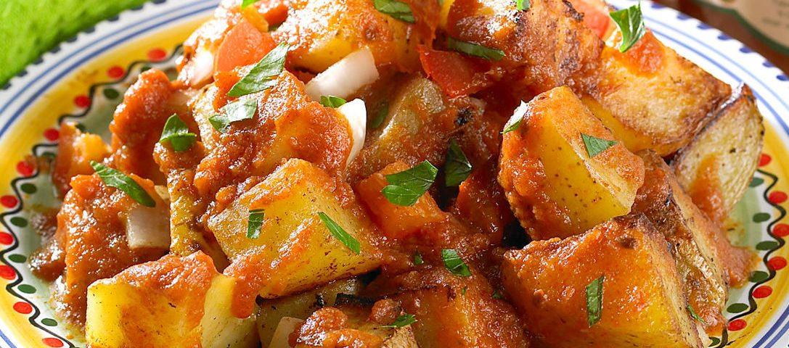

Aprendiendo a cocinar en línea
Las técnicas de cocción, tanto clásicas como modernas, son un patrimonio que el cocinero debe saber aprovechar al máximo.
Cocinar es una de las artes que relaja la mente y el alma.
Receta de papas bravas.

Ingredientes
- 3 ó 4 papas medianas (500g.)
- 4 dientes de ajo
- Ají milido c/n
- Perejil picado c/n
- Sal c/n
- Aceite de oliva para fritura
Elaboración (Pasos)
- Calentar aceite de oliva en una sartén.
- Añadir las papas cortadas en cubos grandes.
- Freír hasta obtener un dorado parejo.
- Quitar el exceso de aceite.
- Salar a gusto
- Picar perejil bien fino y espolvorear junto con el ají molido
Contactanos para más recetas: